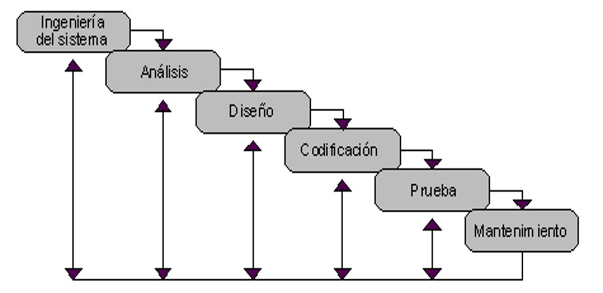
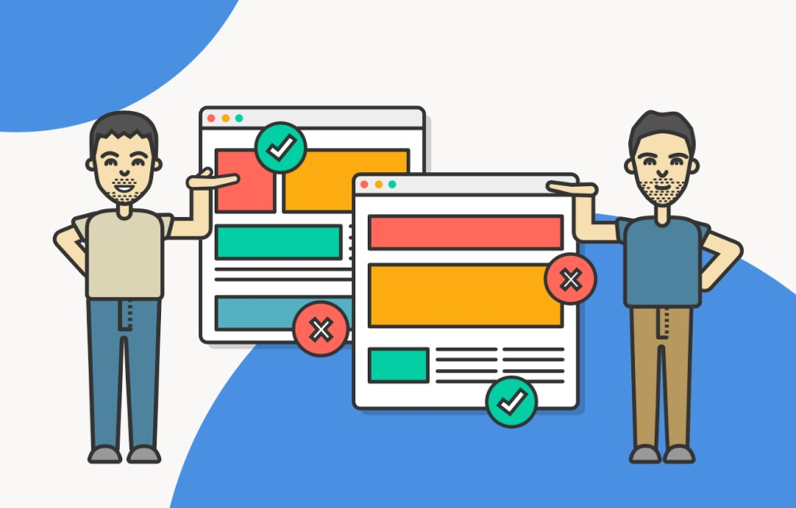

CICLO DE VIDA
Es un proceso que abarca desde la concepción de un producto hasta su finalización y evaluación continua. Aunque los modelos pueden variar, el ciclo de vida generalmente incluye las siguientes etapas:
Investigación y Planificación
- 1. Objetivos del Negocio
- 2. Identificación de Usuarios
- 3. Revisión de la Competencia
- 4. Definición de Requerimientos
Diseño
- 1. Diseño de la Experiencia del Usuario (UX)
- 2. Diseño Visual
- 3. Pruebas de Concepto
Desarrollo
- 1. Implementación
- 2. Pruebas de Usabilidad Iterativas
Evaluación
- 1. Pruebas de Usabilidad Finales
- 2. Recopilación de Datos
- 3. Iteración del Diseño
Implementación y Lanzamiento
- 1. Despliegue
- 2. Monitoreo Post-Lanzamiento
Mantenimiento y Mejora Continua
- 1. Retroalimentación del Usuario
- 2. Actualizaciones y Parches
- 3. Nuevas Funcionalidades
MÉTODOS DE EVALUACIÓN DE USABILIDAD
Es utilizado para garantizar que un producto o sistema sea fácil de usar y cumpla con las necesidades de los usuarios.